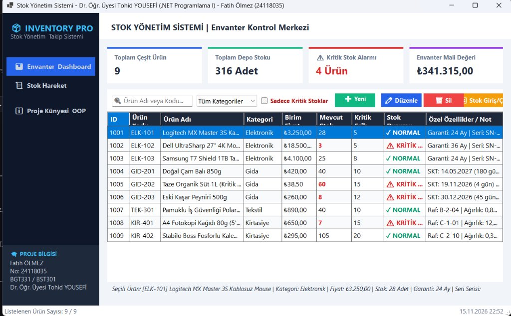
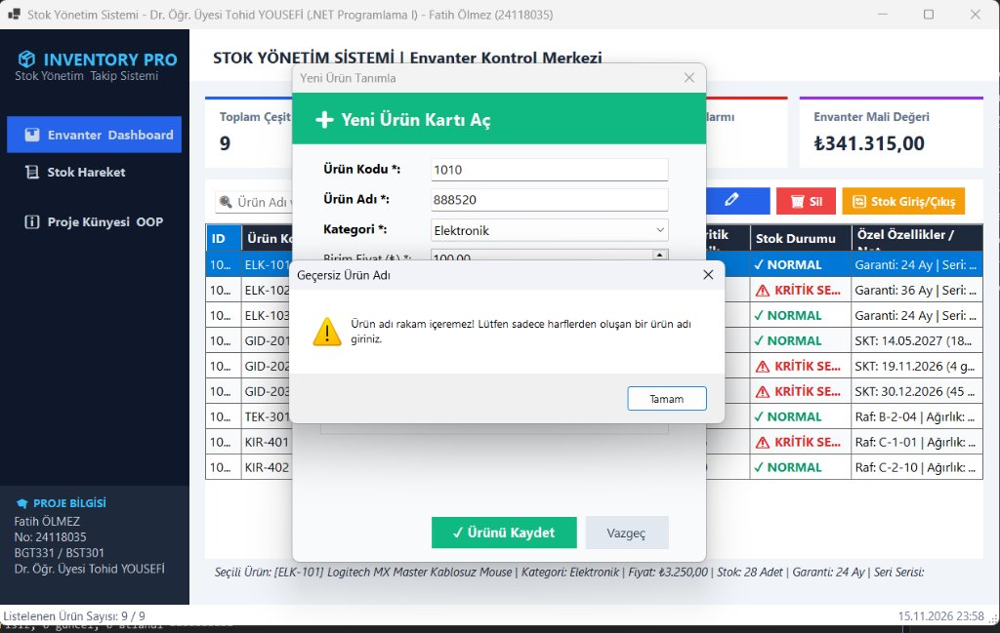
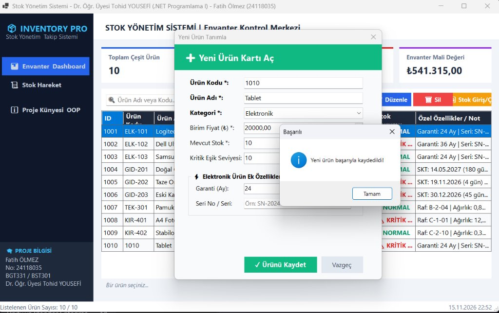
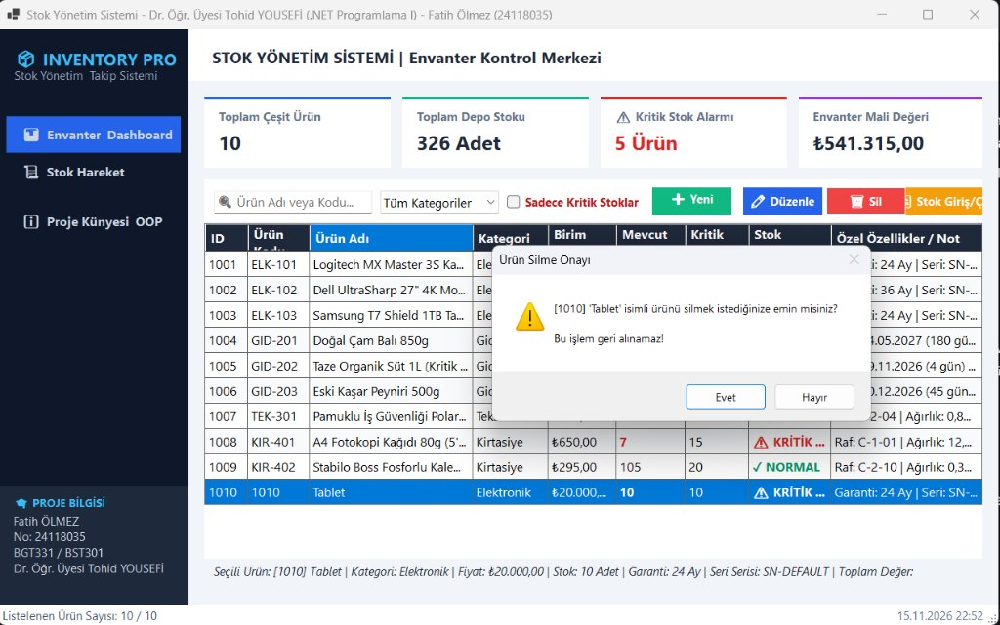
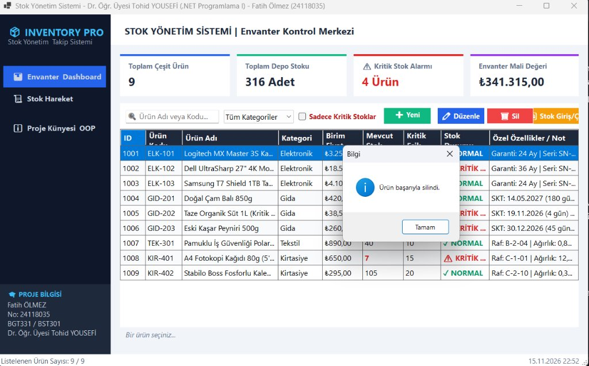

Dersin Kodu: BGT331 / BST301
Dersin Adı: .NET Programlama - I
Öğretim Elemanı: Dr. Öğr. Üyesi Tohid YOUSEFİ
Öğrencinin Adı Soyadı: Fatih ÖLMEZ
Öğrenci Numarası: 24118035
Teslim Tarihi: 20.11.2026
Bu projenin amacı, Nesne Tabanlı Programlama (OOP) kavramlarını (Kapsülleme, Kalıtım, Çok Biçimlilik ve Soyutlama) C# dili ve Windows Forms arayüzü ile eksiksiz biçimde birleştiren kurumsal bir Stok Yönetim Sistemi geliştirmektir. Proje kapsamında veritabanı veya SQL bağlantısı kullanılmamış, tüm veriler uygulama süresince bellekte generic koleksiyonlar üzerinde saklanmıştır.
Tüm sınıf alanları private yapılarak dışarıdan izinsiz erişim engellenmiş, kontrollü property bloklarıyla veri bütünlüğü teminat altına alınmıştır (negatif fiyat ve stok girişleri engellenmiştir).
UrunBase soyut sınıfından türetilen 3 adet alt sınıf oluşturulmuştur: FizikselUrun, BozulabilirUrun ve ElektronikUrun.
KritikStokMu() metodu alt sınıflarda farklı dinamik kurallarla override edilmiştir. Örneğin gıda ürünlerinde stok adedi yeterli olsa dahi son kullanma tarihine 7 günden az kalan ürünler otomatik olarak kritik seviyeye alınmaktadır.
Soyut sınıf olarak UrunBase, arayüz olarak IUrun, IStokIslemleri ve ILoglanabilir tanımlanmış ve sisteme entegre edilmiştir.
Canlı 4 KPI istatistik kartı ve çok biçimli durum rozetleri içeren ürün envanter tablosu:

Ürün adına rakam girildiğinde sistemin fırlattığı uyarı modalı:

Tablet isimli yeni elektronik ürünün başarıyla kaydedilmesi ve sayaçların güncellenmesi:

Yanlışlıkla silinmeyi engelleyen onay dialogu:

Kayıt silindikten sonra tablonun ve sayaçların anlık güncellenmiş hali:

| No | Test İşlemi / Girdisi | Beklenen Sonuç | Gerçekleşen Sonuç | Durum |
|---|---|---|---|---|
| 1 | Stokta 8 adet olan üründen 15 adet çıkış istenmesi | YetersizStokException fırlatılmalı ve işlem durdurulmalıdır. | İşlem engellendi, kullanıcıya açık uyarı verildi. | BAŞARILI |
| 2 | Var olan ürün koduyla (ELK-101) tekrar kayıt açılması | MukerrerUrunKoduException fırlatılmalıdır. | Sistem mükerrer kod uyarısı vererek kaydı reddetti. | BAŞARILI |
| 3 | Birim fiyata negatif değer girilmesi | Sayısal kontrol ve property validasyonu izin vermemelidir. | Negatif giriş engellendi, 0 sınırlandı. | BAŞARILI |
| 4 | SKT'sine 4 gün kalan ürünün (GID-202) çok biçimli kontrolü | KritikStokMu() metodu true dönmeli ve tabloda kırmızı rozet almalıdır. | Tabloda ve KPI sayacında kırmızı rozetle işaretlendi. | BAŞARILI |
| 5 | KIR-402 ürününe +20 adet stok girişi yapılması | Mevcut stok 85'ten 105'e yükselmeli ve log günlüğüne yazılmalıdır. | Stok güncellendi ve denetim defterine kaydedildi. | BAŞARILI |
Şartnamede istenen tüm 100 puanlık rubrik kriterleri eksiksiz olarak yerine getirilmiş; güçlü hata yönetimi, akıllı tablo kontrolleri ve şık arayüz tasarımı ile yüksek standartlarda bir masaüstü yazılımı ortaya konmuştur.